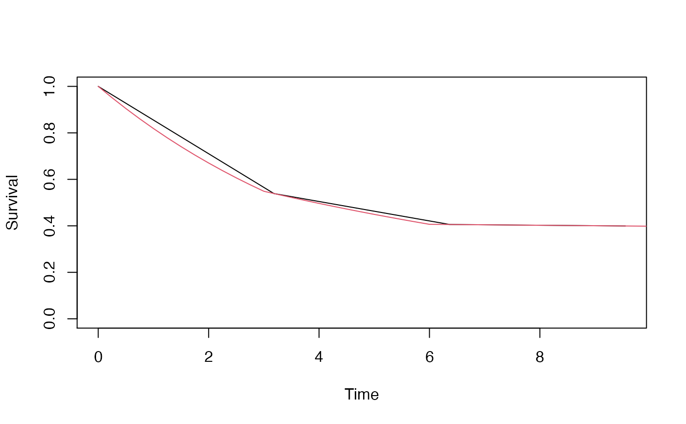

Computes the cumulative distribution function (CDF) or survival rate for a piecewise exponential distribution, which may be stratified.
Arguments
- x
Times at which distribution is to be computed.
- duration
A numeric vector of time duration.
- rate
A numeric vector of event rate.
- lower_tail
Indicator of whether lower (
TRUE) or upper tail (FALSE; default) of CDF is to be computed.- stratum
A vector of stratum labels parallel to
durationandrate, identifying the stratum each interval belongs to, e.g., thestratumcolumn of a data frame created bydefine_fail_rate().NULL(default), or a single distinct value, means the distribution is not stratified.- stratum_prev
A numeric vector of stratum prevalences (the proportion of each stratum in the population), which must sum to 1. Either named (matched to the values of
stratum) or unnamed (matched tounique(stratum)in order of appearance). Required whenstratumhas more than one distinct value, and ignored otherwise.
Details
Suppose \(\lambda_i\) is the failure rate in the interval \((t_{i-1},t_i], i=1,2,\ldots,M\) where \(0=t_0<t_i\ldots,t_M=\infty\). The cumulative hazard function at an arbitrary time \(t>0\) is then:
$$\Lambda(t)=\sum_{i=1}^M \delta(t\leq t_i)(\min(t,t_i)-t_{i-1})\lambda_i.$$ The survival at time \(t\) is then $$S(t)=\exp(-\Lambda(t)).$$
For a stratified distribution, each stratum \(k\) has its own intervals and failure rates, hence its own survival \(S_k(t)\) as above. The marginal (population-level) survival is the mixture of those per-stratum curves, weighted by the stratum prevalences \(w_k\) (summing to 1):
$$S(t)=\sum_k w_k S_k(t).$$
This is the survival of a randomly selected member of the population, and is generally not itself a piecewise exponential distribution: a mixture of exponentials is not exponential. The marginal curve can therefore not be obtained by pooling the per-stratum failure rates, and has to be averaged on the survival scale as above.
To obtain the marginal survival of the experimental arm of a design, multiply the failure rates by the hazard ratios before calling this function.
Examples
# Plot a survival function with 2 different sets of time values
# to demonstrate plot precision corresponding to input parameters.
x1 <- seq(0, 10, 10 / pi)
duration <- c(3, 3, 1)
rate <- c(.2, .1, .005)
survival <- ppwe(
x = x1,
duration = duration,
rate = rate
)
plot(x1, survival, type = "l", ylim = c(0, 1))
x2 <- seq(0, 10, .25)
survival <- ppwe(
x = x2,
duration = duration,
rate = rate
)
lines(x2, survival, col = 2)

# A stratified distribution: the marginal survival of the control arm of a
# design with a 30%/70% split between two biomarker strata.
fail_rate <- rbind(
define_fail_rate(
duration = c(6, Inf), fail_rate = log(2) / c(8, 10),
hr = c(1, .7), dropout_rate = .001, stratum = "Biomarker positive"
),
define_fail_rate(
duration = c(6, Inf), fail_rate = log(2) / c(20, 24),
hr = c(1, .5), dropout_rate = .001, stratum = "Biomarker negative"
)
)
x <- seq(0, 24, 4)
stratum_prev <- c("Biomarker positive" = .3, "Biomarker negative" = .7)
with(fail_rate, ppwe(x, duration, fail_rate, stratum = stratum, stratum_prev = stratum_prev))
#> [1] 1.0000000 0.8215174 0.6919547 0.5958017 0.5151418 0.4470732 0.3893042
# The marginal curve lies between the two per-stratum curves.
split(fail_rate, ~stratum) |>
vapply(function(d) ppwe(x, d$duration, d$fail_rate), numeric(length(x)))
#> Biomarker negative Biomarker positive
#> [1,] 1.0000000 1.0000000
#> [2,] 0.8705506 0.7071068
#> [3,] 0.7666642 0.5176325
#> [4,] 0.6830201 0.3922920
#> [5,] 0.6085018 0.2973018
#> [6,] 0.5421134 0.2253126
#> [7,] 0.4829682 0.1707550
# The marginal survival of the experimental arm.
with(fail_rate, ppwe(x, duration, fail_rate * hr, stratum = stratum, stratum_prev = stratum_prev))
#> [1] 1.0000000 0.8215174 0.7142746 0.6547135 0.6019303 0.5549387 0.5129145